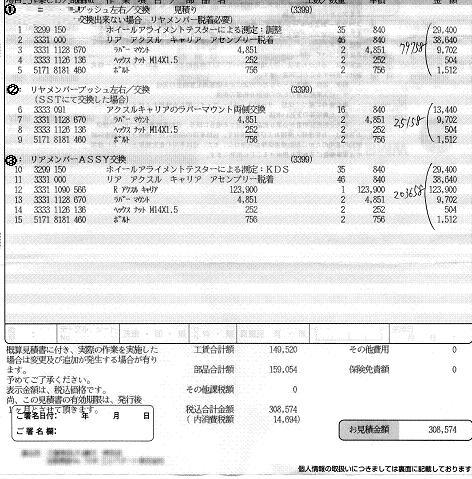
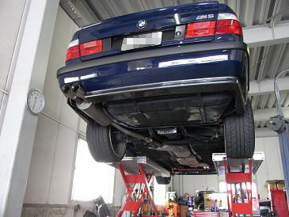
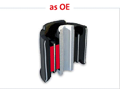
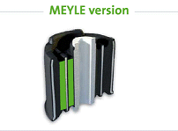
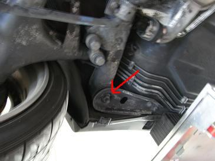
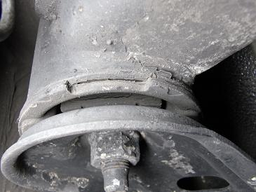
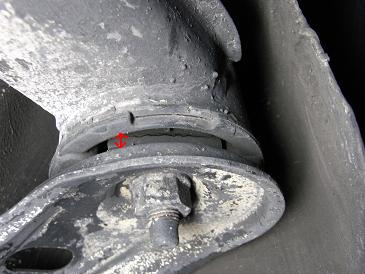
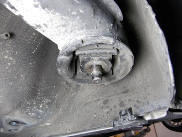
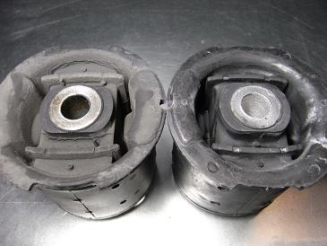
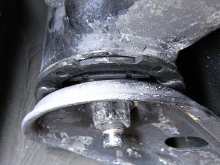

 そこで、通称「茶筒」と呼ばれるリヤアクスルマウントを交換することにした。 重要な部分だけに、いつものようにサードパティー品では怖いので、ディーラーで見積もりを取ってみた。 今回、見積もりを取ったディーラーの話では、滅多にこの部品は交換しないらしい。 交換する時は事故の時ぐらいなんだとか。 そんなことから、このディーラーではSSTは持っておらず、アクスルキャリアを外しての作業か、最悪マウントがアクスルキャリアから外れない時はキャリアごと交換になるようだ（汗 要は、「うちでは交換しません」ってことなんだろう＾＾； 興味本位で３つの見積もりを出してもらった（笑 ?@アクスルキャリアを外して作業した場合 ?ASSTにて作業した場合 ?Bキャリアassy交換した場合
|
 そこで、過去に数台交換したことのあるtake-Mさんに作業をお願いした。 take-Mさんでは、MEYLE製のマウントを使用している。 MEYLEもサードパティーメーカーであるが、今回使用したのは「純正強化品」といわれるタイプで品質にも問題は無いそうだ。
|
  MEYLEのHPによると、左が他のOEMメーカー製 右がMEYLE製と説明がある。 この図からも分かるように、ゴムが多く使用されている。
|
 ココにその問題の「茶筒」がある。
|
 左側の状態 完全にイッてはないが、亀裂が見える。 タイヤが地面に着いた状態では覗き込んでも見えない。
|
 右側の状態 こちらも亀裂が見える。 マウントと下の受け皿がくっついてしまうと完全にイッてしまった状態となる。
|
 下の受け皿が外れた図
|
 お決まりの新旧比較 若干、作りが雑なのが気になる・・・（笑
|
 新しいマウントが装着された図 交換後のインプレッションとしては、気になっていたリヤのふらつきと、ワンテンポ遅れた反応の鈍さは解消された。特に高速コーナーで実感できた。 ただ、元々がフロントアーム類がイッた時に出るような顕著な症状ではないので、オーナーにしかわからない「車のクセ」が解消された感じで劇的な変化ではない。 これからも乗り続けるのであれば、交換しておいたほうが良いと思う。
|